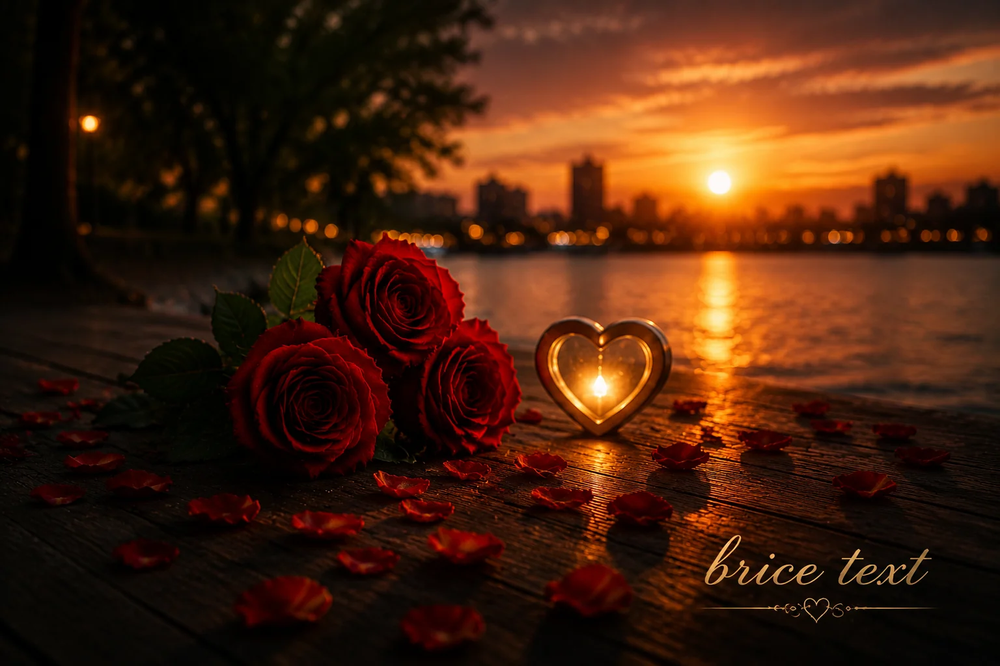
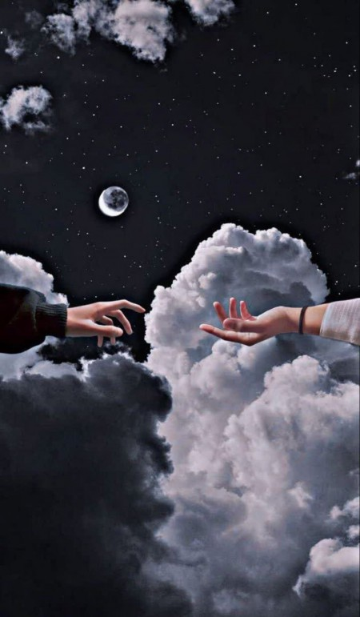

زیباترین جملات عاشقانه و احساسی فارسی


تو فقط یک آدم در زندگی من نیستی؛ تو همان آرامشی هستی که بعد از تمام طوفانها دنبالش میگشتم.
گاهی یک نفر وارد زندگیات میشود و معنی واقعی دوست داشتن را به تو نشان میدهد.
عشق واقعی یعنی کسی که در شلوغی دنیا، آرامش قلب تو باشد.
تو همان آرامشی هستی که بعد از تمام شلوغیهای دنیا، دلم به دنبالش میگردد.
بعضی آدمها وارد زندگی میشوند تا ثابت کنند هنوز هم میشود به عشق واقعی ایمان داشت.
دوست داشتن تو یک انتخاب نیست؛ چیزی است که قلبم هر روز دوباره انتخابش میکند.
زیباترین جای دنیا جایی است که کنار کسی باشی که قلبت آنجا احساس آرامش میکند.
عشق یعنی یک نفر باشد که حتی سکوت کنارش هم زیباتر از هزاران حرف باشد.
گاهی یک لبخند از کسی که دوستش داری، تمام خستگیهای دنیا را از بین میبرد.
تو فقط یک نفر نیستی؛ تو دلیل خیلی از لبخندهای بیدلیل منی.
عشق واقعی یعنی کسی که در سختترین روزها، هنوز انتخاب قلب تو باشد.
با تو سادهترین لحظهها تبدیل به خاطرههایی میشوند که هیچوقت فراموش نمیشوند.
قشنگترین حس دنیا این است که بدانی کسی هست که از ته دل دوستت دارد.
گاهی تمام خوشبختی یک انسان، خلاصه میشود در داشتن یک قلب آرام کنار خودش.
دوست داشتنت شبیه نفس کشیدن است؛ بدون فکر کردن، اما همیشه لازم.
عشق یعنی پیدا کردن کسی که نگاهش، خانهی امن قلب تو باشد.
هر لحظه کنار تو بودن، برای من قشنگترین اتفاق زندگی است.
بعضی عشقها با حرف شروع نمیشوند؛ با یک حس عمیق در قلب آغاز میشوند.
اگر هزار بار هم به دنیا بیایم، باز هم دوست دارم تو را پیدا کنم.
عشق واقعی یعنی در میان میلیونها نفر، قلبت فقط یک نفر را انتخاب کند.
تو همان کسی هستی که بودنش باعث میشود دنیا کمی زیباتر به نظر برسد.
گاهی یک نفر میآید و بدون اینکه بداند، تمام زندگی آدم را تغییر میدهد.
قلب من آرام میگیرد وقتی میداند تو جایی در این دنیا هستی.
عشق یعنی کنار کسی باشی که حضورش از هزاران کلمه بیشتر معنا دارد.
زیباترین داستان زندگی من، همان لحظهای است که تو وارد آن شدی.
بعضی نگاهها هزاران حرف دارند؛ مخصوصاً وقتی از طرف کسی باشد که دوستش داری.
دوست داشتن یعنی حتی در سکوت هم احساس کنی تنها نیستی.
تو همان خاطرهای هستی که دلم دوست دارد هر روز دوباره زندگیاش کند.
گاهی فقط یک نفر کافی است تا تمام دنیا برایت رنگ دیگری بگیرد.
عشق واقعی یعنی کسی که حتی وقتی چیزی نمیگویی، حال دلت را بفهمد.
بودن تو در زندگی من، یکی از زیباترین هدیههایی است که خدا به من داده است.
بعضی آدمها را نمیشود توضیح داد؛ فقط میشود از داشتنشان خوشحال بود.
قلب وقتی آرام میشود که بداند جای خودش را در قلب دیگری پیدا کرده است.
دوست داشتن تو چیزی فراتر از یک احساس ساده است؛ بخشی از وجود من شده است.
عشق یعنی کسی باشد که با حضورش، سختترین روزها آسانتر شوند.
گاهی یک نفر میتواند تمام دلیل لبخندهای یک انسان باشد.
زیباترین لحظهها همانهایی هستند که کنار آدمی که دوستش داری میگذرد.
عشق یعنی انتخاب کردن یک نفر، حتی وقتی هزاران انتخاب دیگر وجود دارد.
تو همان حس خوبی هستی که هر بار به یاد آوردنت، قلبم را آرام میکند.
بعضی قلبها ساخته شدهاند تا پناه آرام قلب دیگری باشند.
اگر عشق یک جمله بود، نام تو زیباترین کلمه آن بود.
کنار تو بودن یعنی پیدا کردن آرامشی که همیشه دنبالش بودم.
گاهی یک نگاه عاشقانه بیشتر از هزاران جمله حرف برای گفتن دارد.
عشق واقعی با گذشت زمان کم نمیشود؛ عمیقتر میشود.
تو دلیل قشنگی خیلی از روزهای معمولی زندگی من هستی.
دوست داشتن یعنی برای خوشحالی یک نفر، از ته دل تلاش کنی.
بعضی خاطرهها با یک نفر ساخته میشوند و تا همیشه در قلب میمانند.
عشق یعنی داشتن کسی که در میان همه شلوغیها، آرامش تو باشد.